Bajo cero
demo.ev_0Señal de temperatura bajo cero; dibujo de copo y termómetro.
Identificar esta evidencia en listados, fichas o leyendas de la demo.
recurso_existente_demo; aprobación visual final no acreditada por separadoConsultar los pictogramas vigentes de las cartas
23 demo · 4 familias · 10 conceptos 3D. Significados documentados; usos editoriales señalados en la guía.
Guía completa · Manifiesto con rutas y hashes

demo.ev_0Señal de temperatura bajo cero; dibujo de copo y termómetro.
Identificar esta evidencia en listados, fichas o leyendas de la demo.
recurso_existente_demo; aprobación visual final no acreditada por separado
demo.ev_1Rastro representado mediante huellas.
Identificar esta evidencia en listados, fichas o leyendas de la demo.
recurso_existente_demo; aprobación visual final no acreditada por separado
demo.ev_2Señal auditiva; oreja y ondas.
Identificar esta evidencia en listados, fichas o leyendas de la demo.
recurso_existente_demo; aprobación visual final no acreditada por separado
demo.ev_3Desplazamiento de objetos; silla y marcas de movimiento.
Identificar esta evidencia en listados, fichas o leyendas de la demo.
recurso_existente_demo; aprobación visual final no acreditada por separadodemo.ev_4Cambios de iluminación; bombilla.
Identificar esta evidencia en listados, fichas o leyendas de la demo.
recurso_existente_demo; aprobación visual final no acreditada por separadodemo.ev_5Marcas o huella en un espejo de mano.
Identificar esta evidencia en listados, fichas o leyendas de la demo.
recurso_existente_demo; aprobación visual final no acreditada por separado
demo.ev_6Señal olfativa representada con trazos de humo.
Identificar esta evidencia en listados, fichas o leyendas de la demo.
recurso_existente_demo; aprobación visual final no acreditada por separado
demo.def_rosRosario con cuentas y cruz.
Identificar esta defensa en cartas, listados o fichas de referencia.
recurso_existente_demo; aprobación visual final no acreditada por separado
demo.def_escOcultamiento; armario con ojo.
Identificar esta defensa en cartas, listados o fichas de referencia.
recurso_existente_demo; aprobación visual final no acreditada por separado
demo.def_ultrGesto de confrontación; puño levantado.
Identificar esta defensa en cartas, listados o fichas de referencia.
recurso_existente_demo; aprobación visual final no acreditada por separado
demo.def_copalRecipiente de copal con humo.
Identificar esta defensa en cartas, listados o fichas de referencia.
recurso_existente_demo; aprobación visual final no acreditada por separado
demo.def_rudaRama de ruda.
Identificar esta defensa en cartas, listados o fichas de referencia.
recurso_existente_demo; aprobación visual final no acreditada por separadodemo.tipo_herramientaCategoría Herramienta; usa una lupa. No representa por sí sola todos los efectos de herramienta.
Identificar el tipo de carta en encabezados, listados o filtros.
recurso_existente_demo; aprobación visual final no acreditada por separado
demo.tipo_habilidadCategoría de habilidad del ánima; mano espectral.
Identificar el tipo de carta en encabezados, listados o filtros.
recurso_existente_demo; aprobación visual final no acreditada por separadodemo.tipo_caceriaCategoría Cacería; calavera con trazos cruzados.
Identificar el tipo de carta en encabezados, listados o filtros.
recurso_existente_demo; aprobación visual final no acreditada por separadodemo.ui_camaraControl relacionado con cámara o captura. La acción exacta no está documentada; debe definirla el juego.
Control relacionado con cámara o captura. La acción exacta no está documentada; debe definirla el juego.
recurso_existente_demo; aprobación visual final no acreditada por separado
demo.ui_cartasAbrir o identificar la mano/panel de cartas del jugador.
Abrir o identificar la mano/panel de cartas del jugador.
recurso_existente_demo; aprobación visual final no acreditada por separado
demo.ui_dadoIdentificar el dado o un control de tirada; el icono no define número de dados, resultado ni probabilidades.
Identificar el dado o un control de tirada; el icono no define número de dados, resultado ni probabilidades.
recurso_existente_demo; aprobación visual final no acreditada por separadodemo.ui_espirituIdentificar el estado o panel de espíritu. No equivale a perder acceso a toda acción.
Identificar el estado o panel de espíritu. No equivale a perder acceso a toda acción.
recurso_existente_demo; aprobación visual final no acreditada por separadodemo.ui_candadoIdentificar un elemento bloqueado o privado; explicar el motivo con texto.
Identificar un elemento bloqueado o privado; explicar el motivo con texto.
recurso_existente_demo; aprobación visual final no acreditada por separadodemo.ui_lupaControl de inspección o ampliación; no confundir con la categoría Herramienta.
Control de inspección o ampliación; no confundir con la categoría Herramienta.
recurso_existente_demo; aprobación visual final no acreditada por separado
demo.ui_descargarDescargar o exportar un recurso; indicar qué archivo se obtiene.
Descargar o exportar un recurso; indicar qué archivo se obtiene.
recurso_existente_demo; aprobación visual final no acreditada por separado
demo.ui_cerrarCerrar un panel o diálogo; no usar para borrar datos sin una indicación distinta.
Cerrar un panel o diálogo; no usar para borrar datos sin una indicación distinta.
recurso_existente_demo; aprobación visual final no acreditada por separado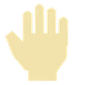
familia.manoFamilia gráfica asociada a acción/interacción.
Símbolo de familia en el encabezado de las cartas: El Vigía, El Improvisador, Manifestar.
recurso_existente_en_cartas; sin aprobación global adicional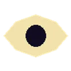
familia.ojoFamilia gráfica asociada a observación/percepción.
Símbolo de familia en el encabezado de las cartas: El Técnico, El Detective, El Sensitivo.
recurso_existente_en_cartas; sin aprobación global adicional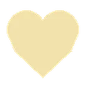
familia.corazonFamilia gráfica asociada a cuidado/apoyo.
Símbolo de familia en el encabezado de las cartas: El Curandero.
recurso_existente_en_cartas; sin aprobación global adicional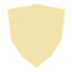
familia.escudoFamilia gráfica asociada a protección.
Símbolo de familia en el encabezado de las cartas: La Devota, El Guardaespaldas, Velar.
recurso_existente_en_cartas; sin aprobación global adicionalconcepto3d.icono_apagarControl conceptual de apagar; debe concretarse el objetivo interactuable.
Referencia visual para el HUD del ánima del proyecto 3D. No sustituye automáticamente iconos ni reglas del juego de cartas.
propuesta_3d_pendiente_revisionconcepto3d.icono_apagonEvento o habilidad conceptual de apagón.
Referencia visual para el HUD del ánima del proyecto 3D. No sustituye automáticamente iconos ni reglas del juego de cartas.
propuesta_3d_pendiente_revisionconcepto3d.icono_cazarControl conceptual de iniciar o representar una cacería.
Referencia visual para el HUD del ánima del proyecto 3D. No sustituye automáticamente iconos ni reglas del juego de cartas.
propuesta_3d_pendiente_revision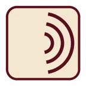
concepto3d.icono_escalofrioEvento o habilidad conceptual de escalofrío.
Referencia visual para el HUD del ánima del proyecto 3D. No sustituye automáticamente iconos ni reglas del juego de cartas.
propuesta_3d_pendiente_revision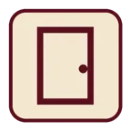
concepto3d.icono_guaridaMarcador conceptual de guarida.
Referencia visual para el HUD del ánima del proyecto 3D. No sustituye automáticamente iconos ni reglas del juego de cartas.
propuesta_3d_pendiente_revision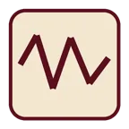
concepto3d.icono_interferenciaEvento o habilidad conceptual de interferencia.
Referencia visual para el HUD del ánima del proyecto 3D. No sustituye automáticamente iconos ni reglas del juego de cartas.
propuesta_3d_pendiente_revisionconcepto3d.icono_moverControl conceptual de movimiento; objetivo o selección por definir.
Referencia visual para el HUD del ánima del proyecto 3D. No sustituye automáticamente iconos ni reglas del juego de cartas.
propuesta_3d_pendiente_revisionconcepto3d.icono_mudanzaEvento o habilidad conceptual Mudanza; no confundir con Mover.
Referencia visual para el HUD del ánima del proyecto 3D. No sustituye automáticamente iconos ni reglas del juego de cartas.
propuesta_3d_pendiente_revisionconcepto3d.icono_portazoEvento o habilidad conceptual de portazo.
Referencia visual para el HUD del ánima del proyecto 3D. No sustituye automáticamente iconos ni reglas del juego de cartas.
propuesta_3d_pendiente_revisionconcepto3d.icono_susurroEvento o habilidad conceptual de susurro; distinto del ID de evidencia ev_2.
Referencia visual para el HUD del ánima del proyecto 3D. No sustituye automáticamente iconos ni reglas del juego de cartas.
propuesta_3d_pendiente_revision